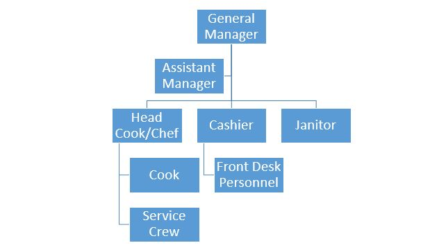
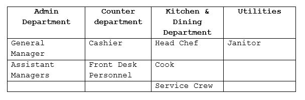

Introduction
This Project Management Plan provides generalframework or structure and establishes specificstrategies and milestones for this certain business.This also features both challenges and opportunitiesfor successful implementation of the project.
Business Structure
Sole Proprietorship
A sole proprietorship is owned by one individual who pays personal income tax on profits earned. This is a popular business form due to its simplicity, ease of setup, and nominal cost. A sole proprietor needs only register his or her name and secure local licenses.This kind of business structure is the easiest type of business to establish or take apart, due to a lack of government regulation.
Company/Business Name and Logo
Company and business name
Cordilleran Dish Resto is a restaurant that serves Cordilleran Dishes most of the main dishes are meat. The restaurant applies the cultural way of preserving meat and wines which are added to some of the restaurant recipes.
Business Logo

Cooking pot "Banga"
This represents the cultural way ofpreparing, handling, and cooking foods by the Cordilleran’s
Letter “C”
The letter “C” stands for the Cordilleradetermines the originality of the business.
Fork and Knife”
This is to represent that the logo for is a restaurant.
Vision, Mission and Objectives
Vision
To be the first preference and the leading restaurant in the whole Cordillera Region.
Mission
To establish as a profitable, well managed and reputable restaurant while providing a quality dining experience to the customers.
Objectives
- To provide better restaurant operations
- To keep food cost less than of 35% of revenue.
- To promote and expand as a unique restaurant.
Organizational Chart
Personel
Job Title
Job Description
General Manager
Allocating budget resources, formulating policies, coordinating business operations, monitoring and motivating staff, managing operational cost, ensuring good customer service, improving administration processes, hiring and training employees. Keeping a record of all income and expenses, and working with kitchen staff to develop a menu. In a great restaurant, the general manager ensures that customers are satisfied while managing back of house priorities.
- A Degree in Business management.
- Prior experience in the restaurant industry.
- Excellent communication skills
- Ability to work long hours.
- Knowledge in book keeping.
- Excellent customers Service skills.
- Willing to work under pressure.
Assistant manager
Makes sure employees perform a variety oftasks, from preparing the food stocking supplies,serving, charging people for their food, handlingcash, credit cards, and a cash register, cleaningtables and counters, resetting tables, greetingcustomers and answering questions. Receive anybusiness deliveries.
- Graduate of any Four-Year Business course.
- With work experience as restaurant as an assistant manager.
- Good in math and reporting skills.
- Good Customers service attitude.
- Communication and team management abilities.
- Willing to work long hours. Within opening hours (e.g. Evening, Holidays, week ends).
- Willing to work under pressure.
Head Chef
Responsible for the food that comes out of a kitchen, from conception to execution. Controlling and directing the food preparation process and any other relative activities. Constructing menus with new or existing culinary creations ensuring the variety and quality of the servings. Approving and “polishing” dishes before they reach the customer. And ensures the safety and cleanliness of the kitchen area.
- Graduate of Hotel and Restaurant Management Course
- 20 years old and above.
- With 2 to 3 years-experience as head cook.
- Excellent communication skills.
- Willing to work long hours. Within opening hours (e.g. Evening, Holidays, week ends).
Cook
Weigh, measure, mix and prepare ingredients according to recipes. Steam, grill, boil, bake or fry meats, fish, vegetables, and other ingredients. Check food and ingredients for freshness and arrange and garnish dishes.
- At least High school/senior high school Graduate
- 18 years old and above
- With or without experience
- Willing to learn
- Flexible
- Willing to work long hours. within opening hours(e.g. Evening, Holidays, week ends)
- Willing to work under pressure
Front Desk Personnel
Responsible for checking hotel guests in and out of their rooms. A few of the main duties are Greeting guests at the front desk, answering any questions, recommending activities and Restaurants to guests, and answering any phone calls.
- At least High school/senior high school Graduate
- 18 years old and above
- With or without experience
- Willing to learn
- Flexible
- Willing to work long hours. within opening hours(e.g. Evening, Holidays, week ends)
- Willing to work under pressure
- No visible tattoo
Cashier
Operates a cash register, communicates withcustomers, and Responsibilities in processingcredit card payments, accepting cash payments andMaking change, and using a point of sale System(POS) for transaction.
- At least High school/senior high school Graduate
- 18 years old and above
- With or without experience
- Willing to learn
- Flexible
- Willing to work long hours. within opening hours(e.g. Evening, Holidays, week ends)
- Willing to work under pressure
- No visible tattoo
- With pleasing personality
Kitchen and Service crews
Weigh, measure, mix and prepare ingredients according to establishment recipes. Duties include preparing ingredients, adhering to the restaurant menu, and following food health and safety procedures. Cook Clean, and Check food and Ingredients for freshness and arrange and garnish dishes. Responsible for assisting and monitoring cashiers in every transaction correctly, process discounts to seniors.
- At least High school/senior high school Graduate
- 18 years old and above
- With or without experience
- Willing to be Trained
- Flexible
- Willing to work long hours. within opening hours(e.g. Evening, Holidays, week ends)
- Willing to work under pressure
Janitor
Performs heavy cleaning duties, such as cleaning floors, shampooing rugs, washing walls, and glass, and removing rubbish. Duties may include tending Furnace and boiler, performing routine maintenance activities, notifying management of need for repairs.
- At least High school/senior high school Graduate
- 18 years old and above
- With or without experience
- Willing to be Trained
- Flexible
- Willing to work long hours. within opening hours(e.g. Evening, Holidays, week ends)
- Willing to work under pressure
Employee Benefits and Policy
Employees Benefits
- Incentive leave
- Maternity Leave
- Paternity leave
- Parental leave
- Special leave for women
- 13-month pay
- Separation pay
- Retirement pays
- Social Security System (SSS)
- PhilHealth
- Pag-IBIG
Rules and regulations;
- Jewelries are prohibited Except Band Ring.
- Hair styles should not draw any attention (No hair color and objects worn in hair).
- Long or artificial nail are not permitted.
- A clean-shaven appearance is preferred on all males.
- All employees must wear complete uniforms while on duty.
- Visible tattoos are not permitted.
Operations;
Employees must be guided by these policies regarding the operational activities of the business;
- Come in to work completely dressed in a clean uniform with nametag.
- Arrive at workplace and punch his/her timecard early or on time for his official work hours/Scheduled time
- Chewing gum and eating food are not allowed while on duty.
- Always respect every individual, including Customers and co-workers. Avoid showing any grossly indecent behavior or using profane language in addressing Management Plan Page 37 Another person no matter what age, race or religion they are.
- Smoking cigarettes, vaping or drinking alcoholbeverages on the business premises whether duringworking hours or not, or reporting for work under theinfluence of alcohol is not allowed.
- Cheating customers (Charging excessive fees) are not allowed.
- Use of illegal drugs or any paraphernalia, or reporting for work under the influence of illegal drugs are not allowed and can lead to termination of employment.
Attendance;
- Unauthorized absences or absence without official leave (AWOL) are absences from work without prior approval or notification shall be considered as without pay. Unauthorized extension of an approved leave shall also be charged as AWOL. Unauthorized Management Plan Page 38 Absences shall be a basis for the imposition of disciplinary-action.
- Employees are required to log in to the Bundy clock using a time card. An employee who fails to file Attendance should ask the supervisor’s approval to confirm, otherwise, it shall be considered AWOL. Failure to file attendance properly shall merit the employee disciplinary action.
- An employee is considered tardy when he reports for work after the start of his official work hours or shift schedule.
- All instances of tardiness regardless of the number of minutes shall be monitored and shall be made the basis for possible salary deductions and/or imposition of disciplinary action.
- An employee who accumulates more than sixty minutes of tardiness within a month or a year, whichever comes first, shall immediately be issued a written warning.
- Corresponding per minute deductions will be made against the employee’s salary for tardiness.
- Under time means leaving early or leaving before the end of the employee’s work schedule.
- Overtime work is work performed beyond eight-hours a day. The employee who worked overtime is paid for compensation equivalent to his regular wage plus twenty-five percent; overtime work on a regular holiday or rest day shall be paid an additional Compensation equivalent to the rate of the first eight hours plus thirty percent (As per Article 87, Labor Code).
Working Conditions
- The staff will follow a six-day work per week and Managers will follow a five-day work per week, both with a given schedule. (As guided by Article91 (1), Labor Code).
- An employee is provided a one-day rest period after six consecutive normal work days (As per Article 91(1), Labor Code). Depending on operational demands An employee may be required to report for work on his rest day; he shall be entitled to an additional 30% of His regular wage for work done on his rest day (As per Article 93(1), Labor Code).
- Each employee is required to render the maximum ordinary hours of work to a maximum of forty-eight ordinary hours of work per week and eight ordinary hours of work per day (As per Article83, Book III, Labor Code).
- Each employee is entitled to a regular one-hour unpaid meal break (As per Article 85, Labor Code) and two fifteen-minute in between paid breaks, following a Predetermined schedule. These breaks shall be properly scheduled to ensure work service continuity.
- Employees shall be paid their regular daily wage on aregular holiday (As per Article 94(1), Labor Code). IfThe employee is required to any regular holiday, heshall be paid a compensation equivalent to twice hisRegular rate (As per Article 94(2), Labor Code). Workperformed on any special holiday shall be paid anadditional compensation of at least thirty percent ofthe regular wage of the employee (As per Article93(1), Labor Code).
- Paydays are on the 15th and 30th of the month, but can be moved to a day before and after in case payday Falls on weekends or holidays. (Wages paid twice a month at intervals not exceeding sixteen days as per Article 103, Labor Code).